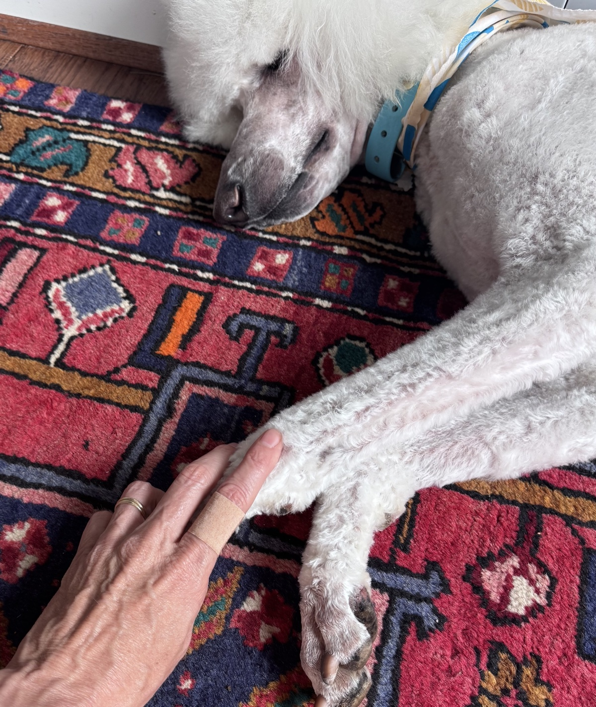

Leadership · Mentoring · Business
Lessons learned
in the exam room.
Veterinary roots. Universal truths. Lessons on leadership, culture, and the part of running a hospital nobody teaches you in school. The ideas start in veterinary medicine, but they apply anywhere people lead people.
Photo: Alvan Nee / Unsplash
Featured

The Best Veterinarian in Town Can Still Lose to a Friendlier Front Desk
Your hospital is not primarily a healthcare provider. It is a service business that happens to deliver healthcare. That distinction changes everything.
Gray Oak Veterinary Consulting
Work with us
The two of us have spent our careers building and running veterinary hospitals, and hitting marks we were told a practice like ours couldn’t hit. If you love your practice but the business of running it is pulling you under, that’s exactly who we built this for.
See how we helpRecent posts

Sometimes They Just Want to Vent
On the difference between mentoring and letting someone get something off their chest. A veterinarian on the day she solved a problem that was already over.

Why Do Vets Still Take Pets to the Back?
Vets still take pets to the back out of habit, not necessity. A veterinarian on why in-room care is faster, calmer, and builds more client trust.

How a Culture of No Takes Over a Veterinary Hospital
A veterinarian on how “no” becomes the house default in a practice, what it quietly costs your team, and the day I realized I had built the culture of no myself.

Empathy vs. Sympathy: The Most Misused Word in Veterinary Medicine
Why sympathy, not empathy, is the emotion that survives a veterinary career, and what the burnout research says about empathic distress and compassion fatigue.

Doctor-First Room Flow: A Faster Way to Run Veterinary Sick Appointments
The history changes the moment the doctor walks in. Why seeing sick cases first, before the assistant takes the history, is faster for everyone and easier on the team.
Practice ManagementScheduling in the Vet Hospital So Everyone Leaves on Time
Phantom appointments and gatekeeping are symptoms, not the disease. Six reasons a veterinary schedule breaks, and the fix for each one so everyone gets home on time.
LeadershipAccountability in Veterinary Leadership: Why It Is Not Optional
Two stories on what happens when leaders fail to hold people accountable, plus a six-step framework for getting it right.

We Teach Our Clients How to Treat Us
Sometimes intentionally, sometimes by answering texts at 10:47 p.m. On boundaries, systems, and the special client problem.

Could've, Should've, Would've
On veterinary self-doubt, the fear of having harmed a patient, and the question that finally let me sleep.

Talk the Ear Off of Corn
How to help your veterinary team redirect chatty clients without losing warmth. Practical phrases, coaching tools, and why protecting the schedule is an act of kindness.
LeadershipWhen the Leader Is the Emergency: How to Lead Your Team Through Crisis and Trauma
What happens when the person your team relies on is the one who needs help. A real story about crisis leadership, debriefs, and what near-misses reveal about your culture.

The Tail on the Counter
Your team will complete what is in front of them. The question is whether you have made sure the right thing is at the top of the list.

She Did Not Need to Be Managed More. She Needed to Be Trusted More.
Why leaders fail to empower employees, and what it costs them. A practical look at hovering, micromanagement, and the bottleneck you built by accident.

The Family Crest Would Be a Donkey
Stubborn does not need instructions. Understanding why people resist change, and knowing when patience stops being leadership.
Practice ManagementLost in Translation
If your client leaves the room confused, it does not matter how correct you were. Clear communication is not a soft skill. It is a clinical skill and a leadership responsibility.

The Lost Art of Porch Sitting
Stillness is not the absence of leadership. It is the beginning of it.

Some People Would Rather Quit Than Say Sorry
When an employee would rather walk out than offer two words, you are not dealing with stubbornness. You are dealing with something leadership cannot fix.

"Try Again Tomorrow": Because Today Was a Disaster
Snapping doesn't make you a bad person. Refusing to reflect on it does. A veterinarian on accountability, apologies, and fixing the systems behind the behavior.

The Unicorn in Sensible Shoes
Indifferent customer service is more damaging than rude service, and it is a leadership failure. The service standard in any business is not what leadership hopes for — it is what leadership is willing to tolerate.

Decision Fatigue Is Real. And So Is My Relationship With Reality TV
When you make high-stakes decisions all day, your brain needs real rest. Not optimized rest. Not productive rest. Just rest.

One Bad Apple Will Ruin the Whole Orchard
Knowing when to fire someone in your veterinary hospital before the damage spreads. Your best employees are not asking you to be perfect. They are asking you to be fair.

Rip the Band-Aid, Not the Skin
How to fire someone without unnecessary damage to them, to you, or to your team. The goal is to do it clearly enough that they would still choose to work for you again.
Subscribe to The Gray Oak Journal
Get new articles in your inbox.
About
From the exam room
to the written page.
Experience is an excellent teacher, although it has a habit of giving the exam first and the lesson afterward.
About The Gray Oak Journal
Leadership is often described with polished language: vision, strategy, alignment, transformation. In reality, it more commonly involves difficult decisions, uncomfortable conversations, and the occasional realization that the situation is not nearly as under control as it appeared five minutes earlier.
The Gray Oak Journal is a collection of reflections on leadership, mentorship, and the practical challenges of guiding organizations and developing people. The ideas here come largely from experience within the veterinary profession, but the lessons travel well. Hiring the right people, building healthy cultures, making difficult decisions with imperfect information, and developing the next generation of leaders are challenges that look remarkably similar across industries.
This journal was created for people who carry responsibility for others: executives, entrepreneurs, practice owners, and professionals who eventually discover that success requires more than technical expertise. At some point the role shifts from doing the work to helping others do their best work.
The goal is not to present perfect answers. Leadership rarely offers those. The aim is to share thoughtful observations and practical insights that might help another leader recognize a problem a little sooner, or feel reassured that they are not the only one figuring it out as they go.
About the Author
The Gray Oak Journal is written by Dr. Susan Ries Valashinas, known to colleagues and mentees as Dr. V.
Dr. Valashinas has spent her career in clinical veterinary practice, hospital ownership and leadership, mentorship, and veterinary business investment. Before veterinary medicine she earned a degree in Business Administration, a background that proved more useful than she initially expected. That combination of clinical experience and business grounding shapes everything written here.
The reflections shared here are offered for leaders who take their responsibilities seriously and recognize that the work benefits from humility, thoughtful reflection, and the occasional ability to laugh at oneself.
— Dr. V
The Gray Oak Journal
Contact
Have a question, a topic suggestion, or just want to say hello? Reach out.
Subscribe to The Gray Oak Journal
Get new articles in your inbox.
© 2026 Gray Oak Veterinary Investments, LLC. All rights reserved.
The Gray Oak Journal is a publication of Gray Oak Veterinary Investments, LLC. The content reflects the personal views and professional experiences of the author and does not constitute legal, financial, or veterinary medical advice.
Blog
All posts
Sometimes They Just Want to Vent
Why Do Vets Still Take Pets to the Back?
How a Culture of No Takes Over a Veterinary Hospital
Empathy vs. Sympathy: The Most Misused Word in Veterinary Medicine
Doctor-First Room Flow: A Faster Way to Run Veterinary Sick Appointments
Practice ManagementScheduling in the Vet Hospital So Everyone Leaves on Time
LeadershipAccountability in Veterinary Leadership: Why It Is Not Optional
We Teach Our Clients How to Treat Us
Could've, Should've, Would've
Talk the Ear Off of Corn
LeadershipWhen the Leader Is the Emergency: How to Lead Your Team Through Crisis and Trauma
The Tail on the Counter
She Did Not Need to Be Managed More. She Needed to Be Trusted More.
The Family Crest Would Be a Donkey
Practice ManagementLost in Translation
The Lost Art of Porch Sitting
Some People Would Rather Quit Than Say Sorry
"Try Again Tomorrow": Because Today Was a Disaster
Decision Fatigue Is Real. And So Is My Relationship With Reality TV
Practice ManagementRip the Band-Aid, Not the Skin
The Unicorn in Sensible Shoes
One Bad Apple Will Ruin the Whole Orchard
The Best Veterinarian in Town Can Still Lose to a Friendlier Front Desk
Subscribe to The Gray Oak Journal
Get new articles in your inbox.